| Nombre | Altura | Hermanos | Cabello | Refrescos semanales | Satisfacción App | |
|---|---|---|---|---|---|---|
| 1 | Marta | 135 | 2 | rubio | 2-3 | 4 |
| 2 | Laura | 132 | 1 | negro | 2-3 | 4 |
| 3 | Xavier | 138 | 0 | negro | 0-1 | 3 |
| 4 | Joan | 141 | 3 | castaño | 4-5 | 2 |
| 5 | Maria | 134 | 2 | rojo | 0-1 | 3 |
| 6 | Maria | 136 | 1 | castaño | 6 o más | 5 |
3 Los datos y sus tipos
Las técnicas básicas de estadística descriptiva consisten en una serie de valores y gráficos que nos permiten resumir y explorar un conjunto de datos, con el objetivo final de entenderlos o describirlos lo mejor posible.
Los datos de los que disponemos suelen ser multidimensionales, en el sentido de que observamos varias características (variables) de una serie de individuos. Almacenamos estos datos en tablas de datos como la que presentamos abajo, donde cada columna corresponde a una variable y cada fila son los datos de un individuo concreto. Así, en esta tabla, cada fila representa un niño y cada columna recoge una de las características que hemos anotado: su nombre, su altura (en cm), su número de hermanos, el color de sus cabellos, el número semanal de refrescos que suele tomar, y su grado de satisfacción con un juego para móvil (entre 0 y 5).
Precaución
En este curso vamos a “sobrecargar” el término variable, en el sentido de que tendrá dos significados diferentes que esperamos que podáis distinguir según el contexto:
Por un lado, llamaremos variable a una característica que puede tomar diferentes valores sobre diferentes individuos; cuando tenga este sentido, a veces le añadiremos el adjetivo poblacional. Por ejemplo, la altura de las personas (de todo el mundo, de un país, de una ciudad…) es una variable poblacional.
Por otro lado, también llamaremos una variable a un vector formado por los valores de una variable poblacional sobre los sujetos de una muestra. Por ejemplo, las alturas de los niños recogidas en la tabla forman una variable en este sentido.
Los tipos básicos de datos que consideramos en este curso son los siguientes:
Datos cualitativos. Son los que expresan una cualidad del individuo, como por ejemplo el sexo cromosómico (macho, hembra), el género de una persona (hombre, mujer, lesbiana, gay, bisexual, transexual, intersexual, asexual), tipos de cáncer (de mama, de colon, de próstata…)… Si solo pueden tomar dos valores (“Sí” o “No”, “Macho” o “Hembra”…) los llamamos binarios o dicotómicos y si pueden tomar más de dos valores, politómicos o multicotómicos, dependiendo de lo que queramos complicar los adjetivos. A los posibles valores que puede tomar un tipo de datos cualitativo se los suele llamar niveles.
Los datos cualitativos pueden ser iguales o distintos, y no admiten ningún otro tipo de comparación.
Datos ordinales. Son datos similares a los cualitativos, en el sentido de que expresan una cualidad del individuo, pero con la diferencia de que se pueden ordenar de manera natural. Por ejemplo, los niveles de gravedad de una enfermedad (sano, leve, grave, muy grave, …) o las calificaciones en un examen (suspenso, aprobado, notable, sobresaliente) son datos ordinales. En cambio, no se pueden ordenar de manera significativa los sexos o los tipos de cáncer de los individuos: por eso son datos cualitativos y no ordinales.
También se suele llamar a los posibles valores que puede tomar un tipo de datos ordinal sus niveles.
Datos cuantitativos. Son datos que se refieren a medidas que sean números genuinos, con los que tenga sentido operar, tales como edades, longitudes, pesos, tiempos, números de individuos, etc. Distinguimos dos tipos:
Discretos: Pueden tomar solo valores que avanzan a saltos y que podemos identificar con números naturales: número de hermanos, número de ingresos en un día en un hospital…
Continuos: Podrían tomar cualquier valor real dentro de un intervalo si se pudieran medir con precisión infinita: altura, temperatura, tiempo…
Ejemplo:
En la tabla anterior:
- La variable “Nombre” es cualitativa.
- La variable “Altura” es cuantitativa continua.
- La variable “Hermanos” es cuantitativa discreta.
- La variable “Cabello” es cualitativa.
- La variable “Refrescos semanales” es ordinal.
- La variable “Satisfacción App” también es ordinal.
Dos puntos relevantes a tener en cuenta y que justifican algunas clasificaciones que puede que encontréis dudosas en el ejemplo anterior:
No todo número es un dato cuantitativo. Solo los consideramos cuantitativos cuando son números genuinos, “de verdad”. Por ejemplo, si pedimos a un paciente que califique su dolor con un número natural de 0 a 10, no es un dato cuantitativo, sino ordinal:
No es una medida precisa del dolor; no son números “de verdad”, sino abreviaturas de “Nada”, “Un poquito”,…, “Matadme”.
Tener dolor 6 no significa “tener el doble de dolor” que tener dolor 3 (si lo significara, ¿cuál sería el valor correspondiente “al doble de dolor” que 7?). En cambio, una persona con 6 hermanos sí que tiene el doble de hermanos que si tuviera 3.
No tiene sentido sumarlos u operarlos en general. Por ejemplo, si yo tengo dolor de nivel 6 y tú tienes dolor de nivel 5, entre los dos no tenemos dolor de nivel 11. En cambio, si yo tengo 6 hermanos y tú 5, entre los dos sí que tenemos 11 hermanos.
Este es justamente el caso de la variable “Satisfacción App” de la tabla anterior. Pese a que sus valores son números, el único contenido real que tienen es su orden: a la María que toma muchos refrescos le ha gustado la app bastante más que a la María que apenas toma refrescos.
- La distinción discreto-continuo es puramente teórica. En realidad, todo dato es discreto porque no podemos medir nada con precisión infinita, pero las herramientas matemáticas “continuas” (derivadas, integrales, etc.) son mucho más potentes que las discretas, por lo que siempre que tenga sentido, es conveniente considerar una variable como continua.
Observad, por ejemplo, la diferencia entre la altura, pongamos que medida en cm y redondeada a unidades como en la tabla anterior, y el número de hermanos. Ambos se presentan como números naturales, pero los números de hermanos no admiten mayor precisión, mientras que las alturas las podríamos medir, con los aparatos adecuados, en mm, en µm, en nm…. Como además las herramientas para tratar datos continuos son mucho más potentes, vamos a considerar las alturas como datos continuos, mientras que los números de hermanos no hay más remedio que tratarlos como discretos.
En concreto, es conveniente considerar en la práctica como datos continuos aquellos que dan lugar a números naturales muy grandes, como por ejemplo los números de glóbulos rojos en un litro de sangre, de bases nucléicas en un genoma, o de personas de un país. La diferencia entre diez millones, diez millones uno, diez millones dos… puede considerarse como continua: de hecho, si tomamos el millón como unidad, la diferencia está en la séptima cifra decimal.
Nota
Hemos dicho que la variable “Cabello” es cualitativa. En principio, el color de los cabellos no tiene ningún orden “natural”. Pero si en un estudio definimos un orden claro para esta variable (por ejemplo, por la longitud de onda correspondiente) y este orden es relevante en nuestro estudio, habrá que considerarla una variable ordinal.
La variable “Refrescos semanales” es de un tipo de datos ordinales muy concreto que a veces se califican de cuantitativos agrupados: sus niveles se obtienen agrupando en intervalos los posibles valores de una variable cuantitativa (en este caso, la variable discreta que mide el número preciso de refrescos semanales).
El análisis, tanto descriptivo como inferencial, de un conjunto de datos es diferente según su tipo.
Así, para datos cualitativos sólo tiene interés estudiar y representar las frecuencias con que aparecen sus diferentes valores, mientras que el análisis de datos cuantitativos suele involucrar el cálculo de medidas estadísticas, como la media o la desviación típica, que expresen numéricamente sus propiedades.
3.0.1 Descripción de datos cualitativos
Los datos cualitativos corresponden a observaciones sobre cualidades de un objeto o individuo, tales como su especie o su sexo, que pueden ser iguales o diferentes y no admiten ningún otro tipo de comparación significativa: por ejemplo, datos para los que no tenga ningún sentido preguntarse si uno es más grande que otro, ni efectuar operaciones aritméticas con ellos, aunque estén representados por números. Llamaremos niveles a los diferentes valores que puede tomar una variable cualitativa; por ejemplo, los dos niveles de una variable “Sexo” serían “Macho” y “Hembra”, o sinónimos.
Lo único que podemos hacer con un conjunto de datos cualitativos es contar cuántas veces aparece cada nivel y presentar estas frecuencias en una tabla o por medio de un gráfico. Distinguiremos entre:
Frecuencia absoluta de un nivel: el número de veces que aparece en la muestra.
Frecuencia relativa de un nivel: la fracción del total de la muestra que representa este nivel.
Además, llamaremos la moda al nivel (o a los niveles, en caso de empate) más frecuente. A veces usaremos adjetivos como unimodal, bimodal, multimodal etc. para referirnos, respectivamente, a una variable con una sola moda, con dos modas, con “varias” modas, etc.
Ejemplo:Hemos recogido información sobre 20 residentes en geriátricos que en el período marzo-mayo de 2020 tuvieron COVID-19. Uno de los datos que hemos recogido sobre estas personas ha sido su sexo. El resultado ha sido una variable cualitativa, que llamaremos “Sexo”, formada por las 20 observaciones siguientes:
Mujer, Mujer, Hombre, Mujer, Mujer, Mujer, Mujer, Mujer, Hombre, Mujer,
Hombre, Hombre, Mujer, Mujer, Hombre, Mujer, Mujer, Mujer, Mujer, HombreSus dos niveles son Hombre y Mujer. En esta variable hay 14 mujeres y 6 hombres. Por lo tanto, éstas son las frecuencias absolutas de estos niveles. Puesto que en total hay 20 individuos, sus frecuencias relativas son:
Hombre: 6/20=0.3
Mujer: 14/20=0.7
La moda de la muestra es el nivel Mujer.
Resumimos estas frecuencias en la tabla de frecuencias siguiente:
| Frecuencia absoluta | Frecuencia relativa | Porcentaje | |
|---|---|---|---|
| Hombre | 6 | 0.3 | 30% |
| Mujer | 14 | 0.7 | 70% |
| Total | 20 | 1.0 | 100% |
El término moda y los adjetivos unimodal, bimodal, etc. también se usan en variables poblacionales: dada una variable poblacional cualitativa, su moda es el nivel más frecuente en el total de la población, cuando existe.
Pero en el caso poblacional, decimos que la variable es unimodal cuando hay un nivel que es mucho más frecuente que el resto, no basta con que haya uno más frecuente. De manera similar, bimodal no significa que la mayor frecuencia de un nivel en la población se dé en dos niveles que empaten exactamente, sino que hay dos niveles con frecuencias parecidas y mucho mayores que el resto.
Por ejemplo, supongamos que tenemos una variable poblacional que puede tomar 4 valores excluyentes: A, B, C, D.
Si en el total de la población los niveles A y B se dan, cada uno, en un 25.1% de los individuos, y los niveles C y D cada uno en un 24.9% de los individuos, no diremos que la variable sea bimodal.
Si en el total de la población el nivel A se da en un 42% de los individuos, el nivel B en un 41% de los individuos, el nivel C en un 9% y el nivel D en un 8%, sí que diremos que es bimodal, aunque A sea más frecuente que el resto.
Con Jamovi, tras entrar los datos en una variable (importando un fichero de datos o entrándolos a mano en Datos), podéis calcular las tablas de frecuencias absolutas y relativas y el diagrama de barras de frecuencias absolutas de una variable cualitativa usando las casillas adecuadas de la sección Exploración/Descriptivas, tal y como se muestra en la imagen siguiente:

Antes de continuar, observad que Jamovi incluye en la tabla de frecuencias una columna “% Acumulado” sin que se la pidamos. Solo la tendremos en cuenta si la variable es ordinal.
Un tipo muy popular de representación gráfica de variables cualitativas son los diagramas circulares, donde se representan los niveles de una variable cualitativa como porciones circulares de un círculo, de manera que el ángulo de cada porción (o equivalentemente, su área) sea proporcional a la frecuencia del nivel al que corresponde. Así, el diagrama circular de la variable dicotómica “Sexo” sería el siguiente:

Pese a su popularidad, es poco recomendable usar diagramas circulares cuando se manejan más de dos niveles, porque a veces es difícil, a simple vista, comprender las relaciones entre las frecuencias que representan. Para convencerse, basta comparar los diagramas de barras y los diagramas circulares de la figura siguiente, importada de la entrada sobre diagramas circulares de la Wikipedia:
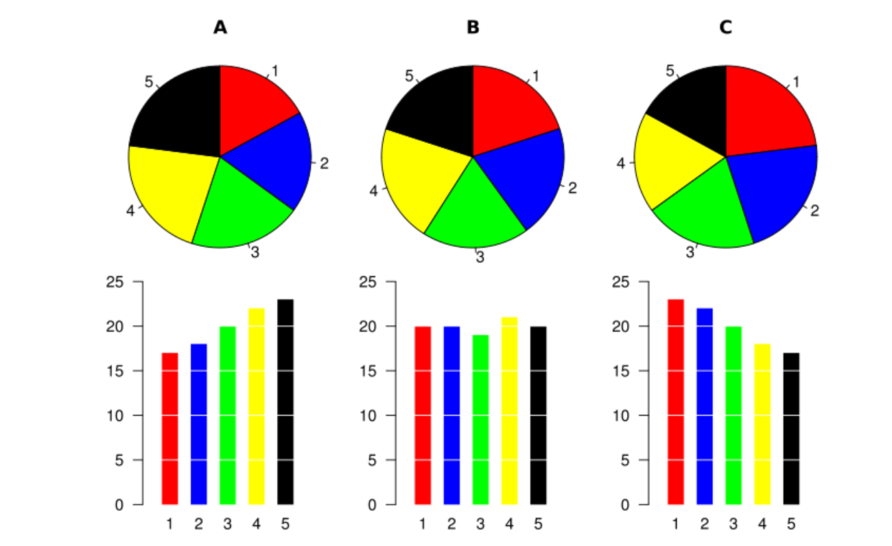
Nota
Y por este motivo, por favor, nunca uséis diagramas circulares para más de dos niveles.
Un gráfico ha de servir más que mil palabras, y tiene que explicar de un vistazo las características más relevantes de los datos que representa. Luego ya se pueden añadir detalles que complementen esta primera comprensión básica. En el caso de un diagrama de barras, su objetivo ha de ser mostrar la relación entre las magnitudes de las frecuencias que representa; si nos interesan sus valores concretos, es mejor dar la tabla. Por ejemplo, en los diagramas de barras de la variable “Sexo” dados más arriba se ve a simple vista que hay aproximadamente el doble de mujeres que de hombres.
Por ese motivo es un pecado mortal modificar un gráfico para que el primer vistazo sea engañoso. En un diagrama de barras, la adulteración más usual, y ante la que hay que estar atentos, es truncarlo de manera que el eje de coordenadas que indique las frecuencias no arranque en el 0. Mirad, por ejemplo, el diagrama de barras siguiente:
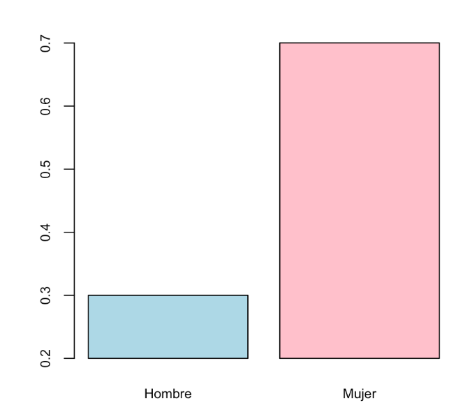
Este diagrama sigue indicando que en la muestra hay un 30% de hombres y un 70% de mujeres, pero si le dais un vistazo superficial, sin mirar las marcas del eje vertical, parece que la proporción de mujeres es cinco veces la de los hombres y no un poco más del doble.
Es muy frecuente encontrar diagramas de barras (u otros tipos de gráficos) truncados en medios de comunicación. Por ejemplo mirad el gráfico siguiente,
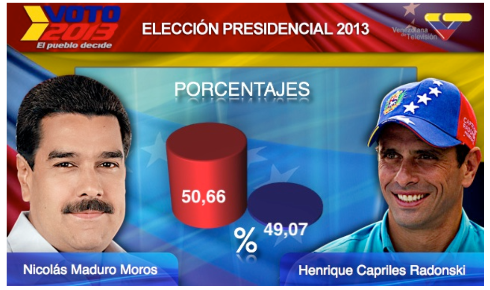
3.0.2 Tablas de frecuencias multidimensionales
Cuando medimos más de una variable cualitativa sobre un mismo grupo de individuos, representamos sus frecuencias absolutas o relativas mediante tablas de contingencia multidimensionales.
Ejemplo:Continuemos con nuestra muestra de 20 pacientes en residencias geriátricas. Además de su sexo, hemos anotado otras dos características: una variable “Demencia” que recoge si en el momento del ingreso en la residencia habían sido diagnosticados con algún tipo de demencia senil, con niveles “No”, “Alzheimer” y “Otros” (para indicar otros diagnósticos de demencia no-Alzheimer), y una variable “Cancer” que indica si en algún momento han sufrido o no cáncer de mama.
La tabla de datos es la siguiente:
| Sexo | Demencia | Cancer | |
|---|---|---|---|
| 1 | Mujer | No | No |
| 2 | Mujer | Alzheimer | Sí |
| 3 | Hombre | Alzheimer | No |
| 4 | Mujer | Otros | No |
| 5 | Mujer | Alzheimer | No |
| 6 | Mujer | Otros | Sí |
| 7 | Mujer | No | No |
| 8 | Mujer | Alzheimer | No |
| 9 | Hombre | Otros | No |
| 10 | Mujer | Otros | Sí |
| 11 | Hombre | Alzheimer | No |
| 12 | Hombre | Alzheimer | No |
| 13 | Mujer | No | No |
| 14 | Mujer | No | No |
| 15 | Hombre | Alzheimer | No |
| 16 | Mujer | No | Sí |
| 17 | Mujer | No | No |
| 18 | Mujer | No | No |
| 19 | Mujer | Alzheimer | No |
| 20 | Hombre | No | No |
La tabla bidimensional de frecuencias absolutas de las variables “Sexo” y “Demencia”, que nos da la frecuencia absoluta de cada combinación de sexo y tipo de demencia senil, es:
| Alzheimer | Otros | No | |
|---|---|---|---|
| Hombre | 4 | 1 | 1 |
| Mujer | 4 | 3 | 7 |
y la tabla tridimensional de frecuencias absolutas de las tres variables, que nos da la frecuencia absoluta de cada combinación de sexo, tipo de demencia senil y si se ha sufrido o no cáncer de mama, es:
Con Jamovi, estas tablas se obtienen fácilmente separando una variable por la otra (u otras) y marcando las mismas casillas en Exploración/Descriptivas que en el caso unidimensional:

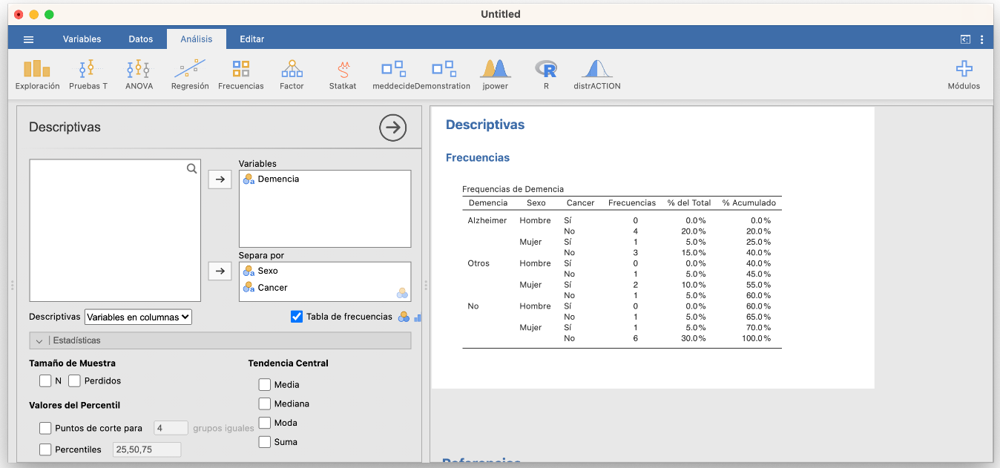
Las tablas bidimensionales se pueden obtener de manera más adecuada en Frecuencias/Muestras independientes: lo explicaremos dentro de un rato.
A menudo es conveniente añadir a una tabla de contingencia multidimensional, filas y columnas marginales (en los márgenes) con las frecuencias totales de cada nivel dentro de cada variable. De esta manera, también tenemos las tablas de frecuencias de cada una de las variables. Por ejemplo, si añadimos la fila y la columna marginales a la tabla bidimensional anterior obtenemos:
| Alzheimer | Otros | No | Total | |
|---|---|---|---|---|
| Hombre | 4 | 1 | 1 | 6 |
| Mujer | 4 | 3 | 7 | 14 |
| Total | 8 | 4 | 8 | 20 |
Las tablas multidimensionales de frecuencias relativas son algo más complicadas porque dichas frecuencias relativas se pueden calcular en el total de la muestra (las llamamos frecuencias relativas globales) o dentro de los niveles de una de las variables (por filas o por columnas, en el caso bidimensional), en función de lo que nos interese medir. Por ejemplo:
- Si nos interesa la fracción de pacientes de cada combinación de sexo y tipo de demencia senil en el total de la muestra, usaremos la tabla de frecuencias relativas globales de las variables “Sexo” y “Demencia”:
| Alzheimer | Otros | No | |
|---|---|---|---|
| Hombre | 0.2 | 0.05 | 0.05 |
| Mujer | 0.2 | 0.15 | 0.35 |
Observad que la suma de todas las entradas de la tabla es 1, lo que indica que estas frecuencias indican proporciones del total de la muestra.
Por ejemplo, la entrada superior izquierda de esta tabla nos dice que los hombres con Alzheimer representan el 20% del total de la muestra. Es decir, si en nuestra muestra \(A\) representa el suceso “Tener Alzheimer” y \(H\) el suceso “Ser hombre”, esta entrada dice que \(P(A\cap H)=0.2\).
- Si nos interesa la fracción de pacientes con cada tipo de demencia senil dentro de cada sexo, usaremos la tabla de frecuencias relativas de la variable “Demencia” dentro de la variable “Sexo”:
| Alzheimer | Otros | No | |
|---|---|---|---|
| Hombre | 0.6667 | 0.1667 | 0.1667 |
| Mujer | 0.2857 | 0.2143 | 0.5000 |
En esta tabla, la suma de las entradas de cada fila es 1, lo que indica que las frecuencias son proporciones dentro de cada fila.
Por ejemplo, la entrada superior izquierda de esta tabla nos dice que los hombres con Alzheimer representan el 66.67% de los hombres de la muestra. Es decir, con las notaciones anteriores, que \(P(A|H)=0.6667\).
- Si nos interesa la fracción de pacientes de cada sexo dentro del grupo de pacientes con cada tipo de demencia senil, usaremos la tabla de frecuencias relativas de la variable “Sexo” dentro de la variable “Demencia”:
| Alzheimer | Otros | No | |
|---|---|---|---|
| Hombre | 0.5 | 0.25 | 0.125 |
| Mujer | 0.5 | 0.75 | 0.875 |
En esta tabla, la suma de las entradas de cada columna es 1, lo que indica que las frecuencias son proporciones dentro de cada columna.
Por ejemplo, la entrada superior izquierda de esta tabla nos dice que los hombres con Alzheimer representan el 50% de los enfermos de Alzheimer de la muestra. O sea, de nuevo con las notaciones anteriores, que \(P(H|A)=0.5\).
En una tabla de contingencia de frecuencias relativas globales, tiene sentido añadir filas y columnas marginales, que nos darán las frecuencias relativas de los niveles de cada variable.
| Alzheimer | Otros | No | Total | |
|---|---|---|---|---|
| Hombre | 0.2 | 0.05 | 0.05 | 0.3 |
| Mujer | 0.2 | 0.15 | 0.35 | 0.7 |
| Total | 0.4 | 0.2 | 0.4 | 1 |
Pero en una tabla de contingencia de frecuencias relativas de una variable respecto de otra no tiene mucho interés. Por ejemplo, añadamos las marginales a la tabla de frecuencias relativas de la variable “Demencia” dentro de la variable “Sexo”:
| Alzheimer | Otros | No | Total | |
|---|---|---|---|---|
| Hombre | 0.6667 | 0.1667 | 0.1667 | 1 |
| Mujer | 0.2857 | 0.2143 | 0.5 | 1 |
| Total | 0.9524 | 0.381 | 0.6667 | 2 |
Como hemos calculado las frecuencias relativas dentro de cada fila, la suma de las frecuencias relativas de cada fila ha de ser 1. Ahora fijaos en la fila Total. Nos dice por ejemplo que la suma de la proporción de hombres que tienen Alzheimer, 0.6667, y de la proporción de mujeres que tienen Alzheimer, 0.2857, es 0.9523. ¿Qué significado tiene este número? Ninguno, y en todo caso de ninguna manera significa que la proporción de individuos con Alzheimer en la muestra sea 0.9523, ya que esta proporción es del 40%.
Nota
A la hora de decidir qué variable asignamos a las filas y cuál a las columnas en una tabla de contingencia bidimensional, es conveniente recordar que, en los paises occidentales, solemos leer las tablas por filas y de izquierda a derecha. Por ello, si tenemos interés en la distribución de los niveles de una variable dentro de los niveles de una segunda variable, puede facilitar la lectura de la tabla que esta segunda variable defina las filas.
Las tablas de contingencia bidimensionales con frecuencias relativas marginales se obtienen con Jamovi en la sección Frecuencias/Muestras independientes. Por ejemplo, si declaramos la variable “Sexo” como la de las filas y la variable “Demencia” como la de las columnas y marcamos Frecuencias observadas en la pestaña Celdas, entonces podemos pedir en las casillas de la columna Porcentajes que se calculen las frecuencias relativas por filas, por columnas o en el total. Por ejemplo, por filas:

Olvidaos por ahora de la tabla “Pruebas de \(\chi^2\)” que aparece en el resultado, ya hablaremos de ella al hablar de contrastes de proporciones. Podéis impedir que aparezca desmarcando la casilla \(\chi^2\) en la pestaña Estadísticas, que sale marcada por defecto.
3.0.3 Diagramas de barras bidimensionales
Una tabla de frecuencias bidimensional se suele representar mediante un diagrama de barras bidimensional, que puede ser:
De barras apiladas: Se escoge una variable (la llamaremos principal), se dibuja una barra para cada uno de sus niveles de altura la frecuencia total de dicho nivel, y cada una de estas barras se divide verticalmente en sectores que representan las frecuencias de los niveles de la otra variable dentro de ese nivel.
Por ejemplo, el diagrama de barras apiladas de frecuencias absolutas de las variables “Sexo” y “Demencia”, tomando la variable “Sexo” como principal:
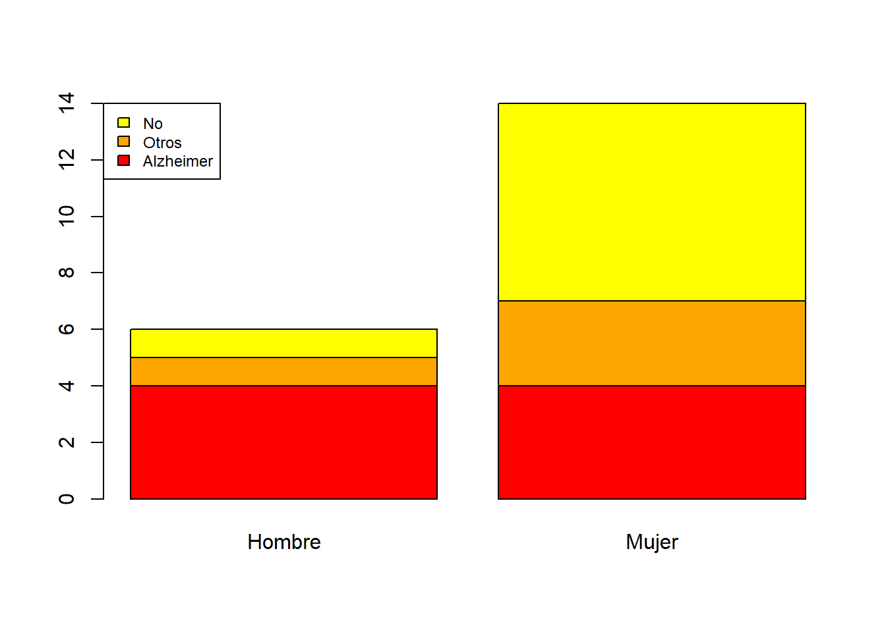
De barras yuxtapuestas. Se escoge una variable principal y para cada uno de sus niveles se dibuja un diagrama de barras de las frecuencias de los niveles de la otra variable.
Así, el diagrama de barras yuxtapuestas de frecuencias absolutas de las variables “Sexo” y “Demencia”, tomando la variable “Sexo” como principal es:
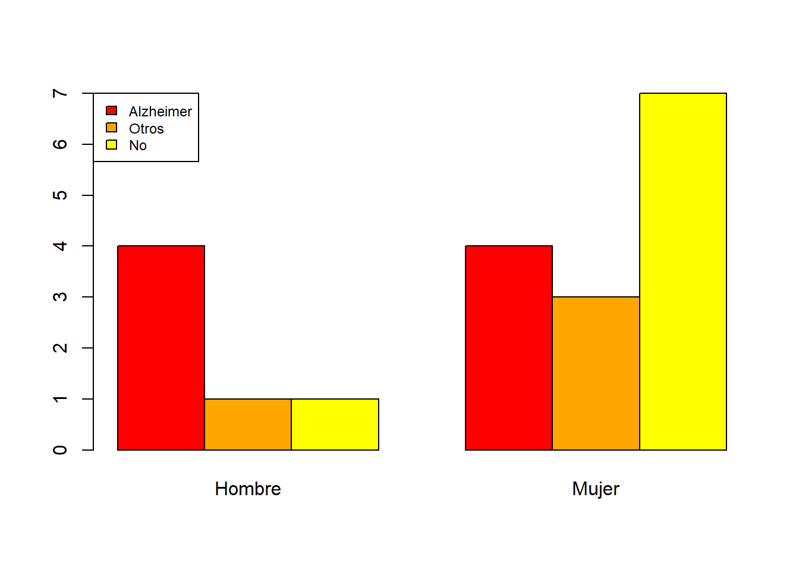
Otros dos ejemplos:
- El diagrama de barras apiladas de frecuencias absolutas de las variables “Sexo” y “Demencia”, tomando la variable “Demencia” como principal es:
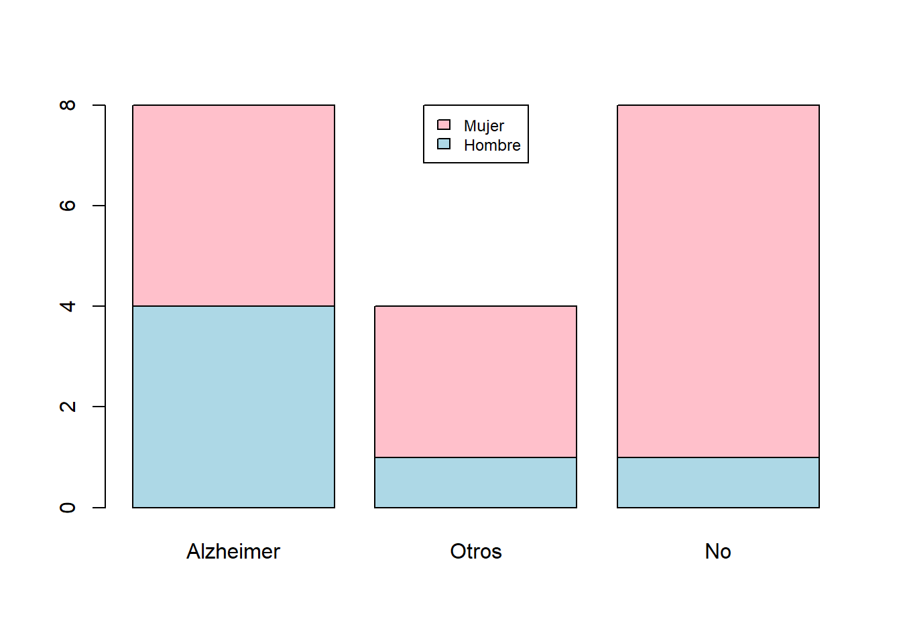
- El diagrama de barras yuxtapuestas de frecuencias absolutas de las variables “Sexo” y “Demencia”, tomando la variable “Demencia” como principal:
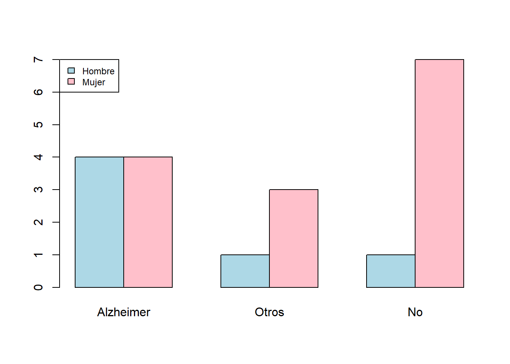
Los diagramas de barras tienen que mostrar la información de la manera más adecuada posible. Por ejemplo, si lo que nos interesa es la distribución de los tipos de demencia por sexo, la variable principal ha de ser el “Sexo”. Si nos interesan las frecuencias relativas globales, seguramente sea más conveniente dar un diagrama de barras tomando como niveles las combinaciones de niveles de ambas variables, como el siguiente diagrama de barras de frecuencias relativas globales de las variables “Sexo” y “Demencia”:
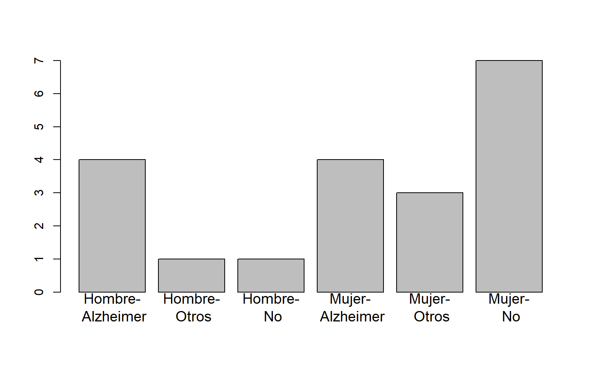
El usar barras apiladas o yuxtapuestas en un diagrama de barras bidimensional ya va más a gusto de cada uno. Como un diagrama de barras yuxtapuestas usa tantas barras como el producto de los números de niveles de las dos variables, si estos dos números son grandes puede necesitar mucho espacio horizontal para ser comprensible. Por otro lado, en los diagramas de barras apiladas es más fácil comparar las frecuencias de los niveles de la variable principal, mientras que en los diagramas de barras yuxtapuestas es más fácil comparar la distribución de los niveles de la variable secundaria dentro de cada nivel de la variable principal.
Lo diagramas de barras bidimensionales se obtienen con las casillas adecuadas de la pestaña Gráficos en Frecuencias/Muestras independientes. Podéis elegir si queréis las barras apiladas (Alineados) o yuxtapuestas (Al lado), si el diagrama de barras ha de ser de frecuencias abolutas o relativas y en este último caso qué tipo de frecuencias relativas (del total, por filas o por columnas) y si la variable principal es la de las filas o las columnas. Por ejemplo, el diagrama de barras yuxtapuestas de frecuencias absolutas de las variables “Sexo” y “Demencia”, tomando la variable “Demencia” como principal, se obtiene de la manera siguiente:

3.0.4 Ejercicio
En un estudio transversal en el que se analizó 75 hombres y 70 mujeres, 40 hombres y 20 mujeres presentaron una determinada enfermedad.
Representad estos datos en un diagrama de barras bidimensional de frecuencias relativas que muestre las proporciones de enfermos y sanos en cada sexo.
¿Qué vale la frecuencia relativa de los hombres entre los participantes que no presentaron la enfermedad?
3.0.5 Diagramas de mosaico
Una tabla tridimensional se puede representar mediante un diagrama de mosaico. Estos gráficos se obtienen sustituyendo cada entrada de la tabla de frecuencias por una región rectangular de área proporcional a su valor. Por ejemplo, los “Sí” y “No” de la fila superior corresponden a la variable “Cancer”:
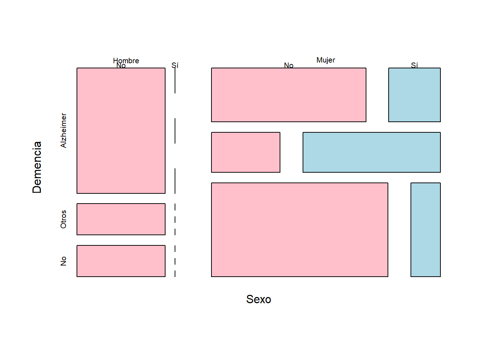
3.0.6 Descripción de datos ordinales
Los datos ordinales son parecidos a los cualitativos, en el sentido de que son cualidades de objetos o individuos. Su diferencia con los datos cualitativos está en que las características que expresan los datos ordinales tienen un orden natural que permite acumular observaciones, es decir, contar cuántas hay por debajo de cada nivel. Un caso frecuente son las escalas tipo Likert, que se usan para expresar el nivel de acuerdo o desacuerdo con una afirmación mediante respuestas cerradas.
Ejemplo:En una encuesta sobre la actitud de personal sanitario frente al dolor (M. E. Zanolin et al, “A questionnaire to evaluate the knowledge and attitudes of health care providers on pain”, Journal of pain and symptom management 33 (2007), pp. 727-736), se pidió el grado de conformidad con afirmaciones como:
Como los narcóticos pueden causar depresión respiratoria, no se han de usar en pacientes pediátricos.
Es útil dar de entrada un placebo al paciente que se queja de dolor para saber si realmente siente dolor.
según la escala Likert siguiente:
| Nivel | Significado |
|---|---|
| 1 | Muy en desacuerdo |
| 2 | En desacuerdo |
| 3 | Neutral |
| 4 | De acuerdo |
| 5 | Muy de acuerdo |
Las respuestas a este tipo de cuestionarios son números, pero no son datos cuantitativos, sino ordinales: meras abreviaturas de los diferentes grados de conformidad.
Para más información sobre escalas Likert, podéis consultar la correspondiente entrada de la Wikipedia.
Cuando trabajamos con datos ordinales, el orden de los niveles de los datos permite calcular no sólo las frecuencias absolutas y relativas que veíamos en la lección anterior, y que para variables ordinales se definen del mismo modo, sino también frecuencias acumuladas. Es decir, no sólo podemos contar cuántas veces hemos observado un cierto nivel, sino también cuántas veces hemos observado un nivel menor o igual que él. Por lo tanto, su descripción estadística es la misma que para datos cualitativos, más:
Frecuencias absolutas acumuladas: El número de veces que aparece en la muestra un nivel menor o igual que el considerado.
Frecuencias relativas acumuladas: La fracción del total de la muestra que representan los niveles menores o iguales que el considerado.
De nuevo, estas frecuencias acumuladas se pueden recoger en una tabla y representar en forma de diagrama de barras (con los niveles ordenados en orden creciente).
Ejemplo:Tenemos una muestra de 20 estudiantes de quienes sabemos la calificación que han sacado en un examen. Clasificamos estas calificaciones en Suspenso (S), Aprobado (A), Notable (N) y Sobresaliente (E) y consideramos su orden natural S < A < N < E. Las calificaciones que han obtenido son las siguientes:
N, A, A, S, S, A, N, E, A, A, S, S, S, A, E, N, N, E, S, AEn esta lista hay 6 S, 7 A, 4 N y 3 E: éstas serían las frecuencias absolutas de las calificaciones en esta muestra de estudiantes. Por lo que se refiere a sus frecuencias absolutas acumuladas:
- Hay 6 estudiantes que han obtenido S o menos: la frecuencia acumulada de S es 6.
- Hay 13 estudiantes que han obtenido A o menos (6 S y 7 A): la frecuencia acumulada de A es 13.
- Hay 17 estudiantes que han obtenido N o menos (6 S, 7 A y 4 N): la frecuencia acumulada de N es 17.
- Hay 20 estudiantes que han obtenido E o menos (todos): la frecuencia acumulada de E es 20.
La frecuencia relativa acumulada de cada calificación es la fracción del total de estudiantes que representa su frecuencia absoluta acumulada. Por ejemplo, la frecuencia relativa acumulada de notables es la proporción de estudiantes que han sacado un notable o menos, y, por lo tanto, es igual a la frecuencia absoluta acumulada de N dividida por el número total de estudiantes: 17/20=0.85. También se puede obtener “acumulando” las frecuencias relativas de las calificaciones menores o iguales que N: como hay un 30% de S (6 de 20), un 35% de A (7 de 20) y un 20% de N (4 de 20), la frecuencia relativa acumulada de N es 0.3+0.35+0.2=0.85, es decir, un 85%.
Así pues, las frecuencias relativas acumuladas de las calificaciones en esta muestra son:
- Frecuencia relativa acumulada de S: 6/20=0.3.
- Frecuencia relativa acumulada de A: 13/20=0.65.
- Frecuencia relativa acumulada de N: 17/20=0.85.
- Frecuencia relativa acumulada de E: 20/20=1.
Resumimos todos estos valores en la tabla siguiente:
| Frecuencia absoluta | Frecuencia relativa | Porcentaje | Frecuencia absoluta acumulada | Frecuencia relativa acumulada | Porcentaje acumulado | |
|---|---|---|---|---|---|---|
| Suspenso | 6 | 0.30 | 30% | 6 | 0.30 | 30% |
| Aprobado | 7 | 0.35 | 35% | 13 | 0.65 | 65% |
| Notable | 4 | 0.20 | 20% | 17 | 0.85 | 85% |
| Sobresaliente | 3 | 0.15 | 15% | 20 | 1.00 | 100% |
Todos los ancianos recogidos en la tabla de datos del Ejemplo presentado con anterioridad fueron diagnosticados con COVID-19 entre marzo y mayo de 2020. Vamos a ampliar dicha tabla de datos con información sobre la gravedad de su enfermedad, clasificada en cuatro niveles: Asintomática, Leve, Hospitalización (si requirió hospitalización pero no en UCI) y UCI. Consideraremos esta variable como ordinal, con sus niveles ordenados en orden creciente de gravedad.
La tabla de datos ampliada es la siguiente:
| Sexo | Demencia Senil | Cáncer de mama | COVID-19 | |
|---|---|---|---|---|
| 1 | Mujer | No | No | Leve |
| 2 | Mujer | Alzheimer | Sí | UCI |
| 3 | Hombre | Alzheimer | No | Leve |
| 4 | Mujer | Otros | No | Asintomática |
| 5 | Mujer | Alzheimer | No | Leve |
| 6 | Mujer | Otros | Sí | Hospitalización |
| 7 | Mujer | No | No | UCI |
| 8 | Mujer | Alzheimer | No | Leve |
| 9 | Hombre | Otros | No | Leve |
| 10 | Mujer | Otros | Sí | Leve |
| 11 | Hombre | Alzheimer | No | Leve |
| 12 | Hombre | Alzheimer | No | Hospitalización |
| 13 | Mujer | No | No | Leve |
| 14 | Mujer | No | No | Asintomática |
| 15 | Hombre | Alzheimer | No | Leve |
| 16 | Mujer | No | Sí | Asintomática |
| 17 | Mujer | No | No | Leve |
| 18 | Mujer | No | No | Hospitalización |
| 19 | Mujer | Alzheimer | No | Hospitalización |
| 20 | Hombre | No | No | Leve |
Entonces:
- La tabla de frecuencias absolutas de la variable COVID-19 es:
| COVID-19 | Frecs. |
|---|---|
| Asintomática | 3 |
| Leve | 11 |
| Hospitalización | 4 |
| UCI | 2 |
- Su tabla de frecuencias relativas:
| COVID-19 | Frecs. |
|---|---|
| Asintomática | 0.15 |
| Leve | 0.55 |
| Hospitalización | 0.20 |
| UCI | 0.10 |
- Su tabla de frecuencias absolutas acumuladas:
| COVID-19 | Frecs. Acum |
|---|---|
| Asintomática | 3 |
| Leve | 14 |
| Hospitalización | 18 |
| UCI | 20 |
- Su tabla de frecuencias relativas acumuladas:
| COVID-19 | Frecs. Acum |
|---|---|
| Asintomática | 0.15 |
| Leve | 0.70 |
| Hospitalización | 0.90 |
| UCI | 1.00 |
- Su diagrama de barras de frecuencias absolutas acumuladas:
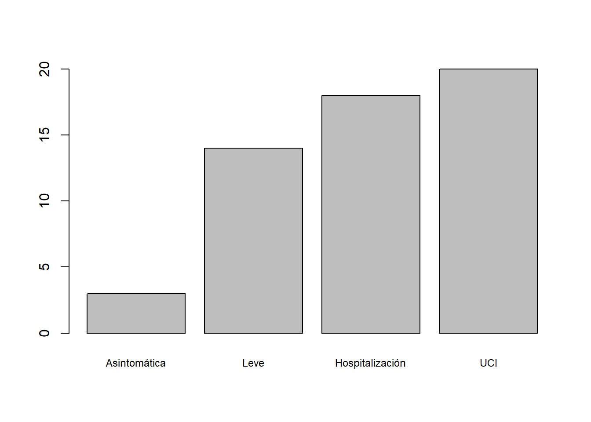
- Su diagrama de barras de frecuencias relativas acumuladas:
- La tabla bidimensional de frecuencias absolutas de las variables Demencia Senil y COVID-19:
| Asintomática | Leve | Hospitalización | UCI | |
|---|---|---|---|---|
| Alzheimer | 0 | 5 | 2 | 1 |
| Otros | 1 | 2 | 1 | 0 |
| No | 2 | 4 | 1 | 1 |
- Su tabla de frecuencias relativas acumuladas dentro de cada nivel de demencia senil:
| Asintomática | Leve | Hospitalización | UCI | |
|---|---|---|---|---|
| Alzheimer | 0.00 | 0.625 | 0.875 | 1 |
| Otros | 0.25 | 0.750 | 1.000 | 1 |
| No | 0.25 | 0.750 | 0.875 | 1 |
- El diagrama de barras yuxtapuestas de esta última tabla:
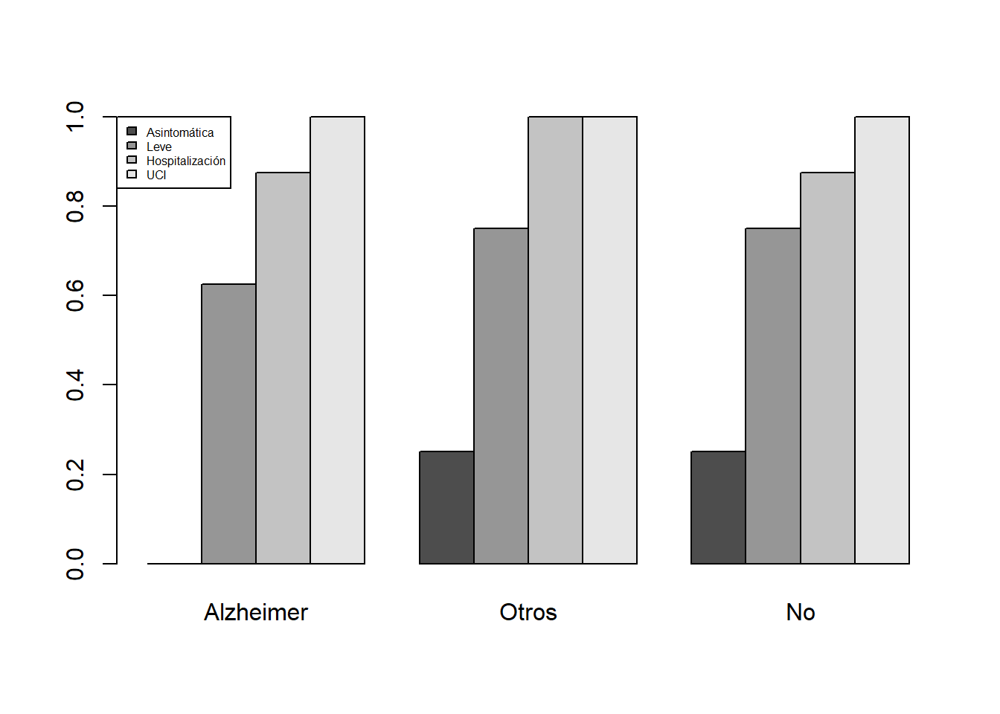
Como vimos antes, Jamovi da las frecuencias acumuladas (si hemos especificado correctamente el orden de los niveles) al calcular tablas de contigencia en Exploración/Descriptivas. En las tablas multidimensionales la acumulación se lleva a cabo en el total, lo que no siempre es conveniente. Para calcular bien tablas bidimensionales acumulando frecuencias por filas o columnas hay que usar R en la ventana de edición R. Por ejemplo, para obtener la tabla de frecuencias relativas acumuladas que hemos dado hace un momento de niveles de gravedad de la COVID dentro de cada nivel de demencia senil podemos usar:
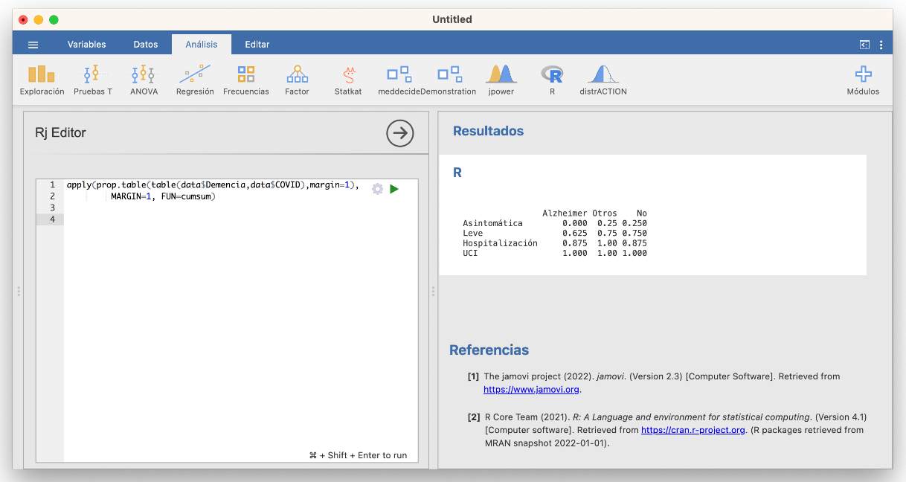
Fijaos en la lógica de la sintaxis de esta instrucción. De dentro a fuera:
table(data$Demencia, data$COVID)calcula la tabla de frecuencias absolutas de las variables Demencia y COVID, con filas la Demencia.prop.table(..., margin=1)calcula la tabla de frecuencias relativas (de proporciones) por filas (margin=1) de la tabla de frecuencias absolutas a la que se aplica en los puntos suspensivos.apply(..., MARGIN=1, FUN=cumsum)aplica la funcióncumsum, que calcula las sumas acumuladas, por filas (MARGIN=1) a la tabla entrada en los puntos suspensivos.
Esta última función transpone nuestra tabla (siempre da el resultado de manera que la dimensión en la que se acumulan las frecuencias sea la de las columnas); si quisiérais mantener los tipos de demencia en la filas, se aplicaría t(...) al resultado del apply.
Ejercicio
Calculad la tabla bidimensional de frecuencias relativas acumuladas de los niveles de gravedad de la COVID-19 en cada sexo, y representad esta tabla por medio de un diagrama de barras yuxtapuestas adecuado.
3.0.7 Descripción de datos cuantitativos
Los datos cuantitativos son los que expresan cantidades que se representan mediante números, tales como los resultados de contar objetos o individuos o de medir pesos, distancias, tiempos o concentraciones.
Como los números reales están ordenados de manera natural, para estudiar una muestra de datos cuantitativos (una variable cuantitativa) podemos usar las frecuencias y las frecuencias acumuladas de sus diferentes valores, como en las variables ordinales. Esto realmente solo es útil cuando en la muestra tenemos pocos valores diferentes.
Como los datos cuantitativos son números reales y tienen el significado de números reales, podemos operar con ellos. Esto nos aporta una multitud de estadísticos, expresiones matemáticas que, aplicadas a un vector de datos cuantitativos, producen valores que expresan diferentes características del mismo.
Supongamos de ahora en adelante que tenemos una muestra formada por \(n\) números, que denotaremos \(x_1,\ldots,x_n\).
En primer lugar tenemos los estadísticos de tendencia central, que dan un valor representativo del conjunto de datos de la variable; los más importantes son:
La moda, que es el valor, o los valores, de máxima frecuencia (absoluta o relativa, tanto da). Normalmente, solo se usa para variables discretas.
La media aritmética: \[ \overline{x}=\frac{x_1+\cdots+x_n}{n} \]
En este curso, cuando hablemos de la media de unos datos nos referiremos siempre a su media aritmética. Hay otros tipos de media, como por ejemplo la media geométrica o la armónica, que no estudiaremos.
La mediana \(Q_{0.5}\), que representa el valor central en la lista ordenada de observaciones. Se define de la manera siguiente. Si denotamos por \[ x_{(1)}\leqslant x_{(2)}\leqslant \cdots \leqslant x_{(n)} \] los datos de la variable cuantitativa ordenados de menor a mayor:
Si \(n\) es impar, su mediana es el dato central: \(x_{(n+1)/2}\).
Por ejemplo, si una muestra está formada por 7 números, su mediana es el cuarto tras ordenarlos de menor a mayor.
Si \(n\) es par, su mediana es la media de los dos datos centrales: \[ \frac{x_{(n/2)}+x_{(n/2+1)}}{2}. \]
Por ejemplo, si una muestra está formada por 8 números, su mediana es la media del cuarto y el quinto tras ordenarlos de menor a mayor.
Tomemos la variable “Hijos” de la Tabla @ref(tab:tablager4), formada por los números
4, 1, 8, 0, 3, 4, 2, 1, 1, 2, 6, 0, 0, 1, 4, 2, 0, 3, 6, 3
En su tabla de frecuencias vemos que la moda son los valores 0 y 1, que empatan en la frecuencia máxima.
Su media es \[ \frac{4+1+8+0+3+\cdots+0+3+6+3}{20}=2.55 \]
Para calcular su mediana, lo primero que hacemos es ordenar de menor a mayor las observaciones, y marcamos su posición dentro del conjunto ordenado:
Como tenemos 20 datos, la mediana será la media aritmética de sus dos valores centrales, los de las posiciones 10 y 11: \(Q_{0.5}=(2+2)/2=2\).
¿Qué les pasa a estos estadísticos si eliminamos el paciente con 8 hijos de la muestra? Los datos son ahora
4, 1, 0, 3, 4, 2, 1, 1, 2, 6, 0, 0, 1, 4, 2, 0, 3, 6, 3
La moda siguen siendo los valores 0 y 1, ya que no hemos modificado sus frecuencias y hemos eliminado observaciones
Su media ahora es \[ \frac{4+1+0+3+\cdots+0+3+6+3}{19}=2.263 \]
Como ahora tenemos 19 observaciones, su mediana será la observación central, es decir, la décima tras ordenarlas de menor a mayor:
Por lo tanto, \(Q_{0.5}=2\).
¿Y qué les pasaría a estos estadísticos si, en la muestra original, hubiéramos cometido un error y al último paciente le hubiéramos anotado 300 hijos en lugar de 3? Los datos así serían:
4, 1, 8, 0, 3, 4, 2, 1, 1, 2, 6, 0, 0, 1, 4, 2, 0, 3, 6, 300
La moda no cambia
La media ahora sería \[ \frac{4+1+8+0+3+\cdots+0+3+6+300}{20}=17.4 \]
Como volvemos a tener 20 números, la mediana sería otra vez la media de las observaciones décima y undécima tras ordenarlas de menor a mayor:
| Posición | 1 | 2 | 3 | 4 | 5 | 6 | 7 | 8 | 9 | 10 | 11 | 12 | 13 | 14 | 15 | 16 | 17 | 18 | 19 | 20 |
| Valor | 0 | 0 | 0 | 0 | 1 | 1 | 1 | 1 | 2 | 2 | 2 | 3 | 3 | 4 | 4 | 4 | 6 | 6 | 8 | 300 |
De nuevo, \(Q_{0.5}=(2+2)/2=2\).
Nota
Es importante observar que:
La moda es el valor más repetido, pero puede ser poco representativa y puede carecer completamente de interés si, por ejemplo, todos los valores de la muestra tienen frecuencias muy parecidas.
La media es poco robusta, en el sentido de que los valores extremos pueden afectarla mucho
La mediana es muy robusta, en el sentido de que los valores extremos la afectan poco
Por este motivo, por ejemplo, a la hora de resumir los salarios españoles, se publican los tres valores:

Es interesante copiar un trozo de la nota de prensa de la que hemos extraído el gráfico, donde se comenta la relación entre la moda, la media y la mediana:
“El salario bruto medio anual en España fue de 24.009,12 euros por trabajador en el año 2018, un 1,5% mayor al año anterior. La diferencia entre este salario medio y el salario más frecuente o modal (de 18.468,93 euros) fue de más de 5.500 euros. Esto significa que había pocos trabajadores con salarios muy altos pero que influyeron notablemente en el salario medio.
“Por otra parte, el salario mediano (que divide al número de trabajadores en dos partes iguales, los que tienen un salario superior y los que tienen un salario inferior) presentó un valor de 20.078,44 euros en 2018.”
Medidas de posición
Las medidas de posición dividen la variable en unas determinadas proporciones; estos valores reciben el nombre de cuantiles. En este sentido, la mediana es también una medida de posición, puesto que divide la variable en dos mitades.
Dada una proporción \(0<p<1\), el cuantil de orden \(p\), o \(p\)-cuantil, de una variable cuantitativa, que denotaremos por \(Q_p\), es el valor más pequeño del conjunto de datos cuya frecuencia relativa acumulada es mayor o igual que \(p\); o sea, el valor más pequeño de la muestra que es mayor o igual que el \(100p\%\) de los valores de la muestra. Dicho de una tercera manera, si tenemos un conjunto de números \(x_1, \ldots, x_n\) y los ordenamos de menor a mayor, \[ x_{(1)}\leqslant x_{(2)}\leqslant \cdots \leqslant x_{(n)}, \] entonces \(Q_p\) es el primer valor \(x_{(i)}\) de esta lista ordenada que deja a su izquierda (incluyéndolo a él) como mínimo la fracción \(p\) de los datos, es decir, \(p\cdot n\) datos.
La excepción a esta regla es el cuantil \(Q_{0.5}\), que es la mediana y se calcula como hemos explicado antes.
Ejemplo:Considera la variable “Hijos” que registra el número de hijos vivos en el momento de ingreso de unos pacientes en sus residencias geriátricas. Sus 20 valores, ordenados de menor a mayor son:
| Posicion | 1 | 2 | 3 | 4 | 5 | 6 | 7 | 8 | 9 | 10 | 11 | 12 | 13 | 14 | 15 | 16 | 17 | 18 | 19 | 20 |
| Valor | 0 | 0 | 0 | 0 | 1 | 1 | 1 | 1 | 2 | 2 | 2 | 3 | 3 | 3 | 4 | 4 | 4 | 6 | 6 | 8 |
Entonces:
El 0.2-cuantil, \(Q_{0.2}\), es el primer elemento en esta lista ordenada que es mayor o igual que el 20% de los datos. Como el 20% de 20 es 4, \(Q_{0.2}\) es el cuarto elemento de la lista ordenada: 0.
El 0.75-cuantil, \(Q_{0.75}\), es el primer elemento en esta lista ordenada que es mayor o igual que el 75% de los datos. Como el 75% de 20 es 15, \(Q_{0.75}\) es el decimoquinto elemento de la lista ordenada: 4.
El cuantil de orden 1/3, \(Q_{1/3}\), es el primer elemento en esta lista ordenada que es mayor o igual que un tercio de los datos. Como un tercio de 20 es 6.66 y pico, \(Q_{1/3}\) es el séptimo elemento de la lista ordenada: 1. Fijaos en que 6/20=0.3, y por lo tanto el sexto elemento de la lista solo es mayor o igual que el 30% de la muestra, no un tercio. Necesitamos el séptimo elemento para llegar al tercio, aunque entonces nos pasemos.
Los cuantiles se calculan a partir de los valores ordenados de la muestra, teniendo en cuenta los valores repetidos. Es decir, si se han observado un 1, un 2, un 3, un 4 y cinco 5, la mediana no es el valor central de 1, 2, 3, 4, 5, sino el de 1, 2, 3, 4, 5, 5, 5, 5, 5, que es 5.
Nota
En realidad, la definición que hemos dado de cuantil es “orientativa”: no hay una regla única para calcular cuantiles de una muestra (salvo la mediana), y se han propuesto varios métodos que pueden dar resultados diferentes; podéis consultar nueve de estos métodos en la entrada sobre cuantiles de la Wikipedia en inglés. La razón de esta diversidad es que a veces el objetivo final del cálculo de un cuantil no es solo descriptivo (dar el menor valor mayor o igual que una fracción \(p\) de la muestra) sino que es inferencial (estimar el menor valor que es mayor o igual que una fracción \(p\) del total de la población) y esta inferencia se puede hacer de muchas maneras, según las propiedades que tenga (o que supongamos que tenga) la población.
¿Qué os recomendamos? No os compliquéis la vida:
- Si calculáis cuantiles a mano, usad la definición que hemos dado, que es la más sencilla de todas
- Si los calculáis con algún paquete estadístico, usad su método por defecto (que seguramente no sea el que hemos explicado)
Algunos cuantiles con nombre propio:
La mediana es el cuantil \(Q_{0.5}\).
Los cuartiles son los cuantiles \(Q_{0.25}\), \(Q_{0.5}\) y \(Q_{0.75}\), y reciben, respectivamente, los nombres de primer cuartil, segundo cuartil (o mediana) y tercer cuartil. \(Q_{0.25}\) será, pues, el menor valor que es mayor o igual que una cuarta parte de los datos, y \(Q_{0.75}\), el menor valor que es mayor o igual que tres cuartas partes de los datos.
Los deciles son los cuantiles \(Q_{p}\) con \(p\) un múltiplo entero de 0.1: el primer decil es \(Q_{0.1}\), el segundo decil es \(Q_{0.2}\), y así sucesivamente.
Los percentiles son los cuantiles \(Q_{p}\) con \(p\) un múltiplo entero de 0.01: \(Q_{0.01}\) es el primer percentil, \(Q_{0.02}\) es el segundo percentil, etc.
Se llama intervalo intercuartílico, \(\mathit{IQI}\), al intervalo cerrado \([Q_{0.25},Q_{0.75}]\). Fijaos que como un 75% de los datos de la muestra son menores o iguales que \(Q_{0.75}\) y, de estos, un 25% son menores o iguales que \(Q_{0.25}\), dentro del \(\mathit{IQI}\) caerán más o menos el 50% de los datos de la muestra, a no ser que haya muchas repeticiones en los extremos del intervalo.
Ejemplo:Seguimos con la variable “Hijos”. Su primer cuartil será su quinto dato tras ordenarlos de menor a mayor; como hay cuatro ceros y cuatro unos, será 1. Su tercer cuartil ya lo hemos calculado antes, es 4. Por lo tanto su intervalo intercuartílico es [1,4]. Este intervalo contiene 14 elementos de la muestra, bastante más de la mitad, porque la muestra contiene muchas repeticiones del 1 y el 4.
Las medidas de posición también se pueden, y se suelen, usar en la descripción de datos ordinales. En este caso, la mediana se define como el primer valor de la muestra mayor o igual que (al menos) la mitad de la muestra. El resto de cuantiles se definen como los hemos definido aquí.
Ejercicio Aquí tenéis una muestra de 14 niveles de glucosa medidos en niños en ayunas:
56, 60, 62, 63, 63, 65, 65, 66, 66, 66, 66, 68, 70, 72
Calculad su:
- Moda
- Media
- Mediana
- Primer y tercer cuartiles
- Porcentaje de elementos de la muestra que caen dentro del intervalo intercuartílico